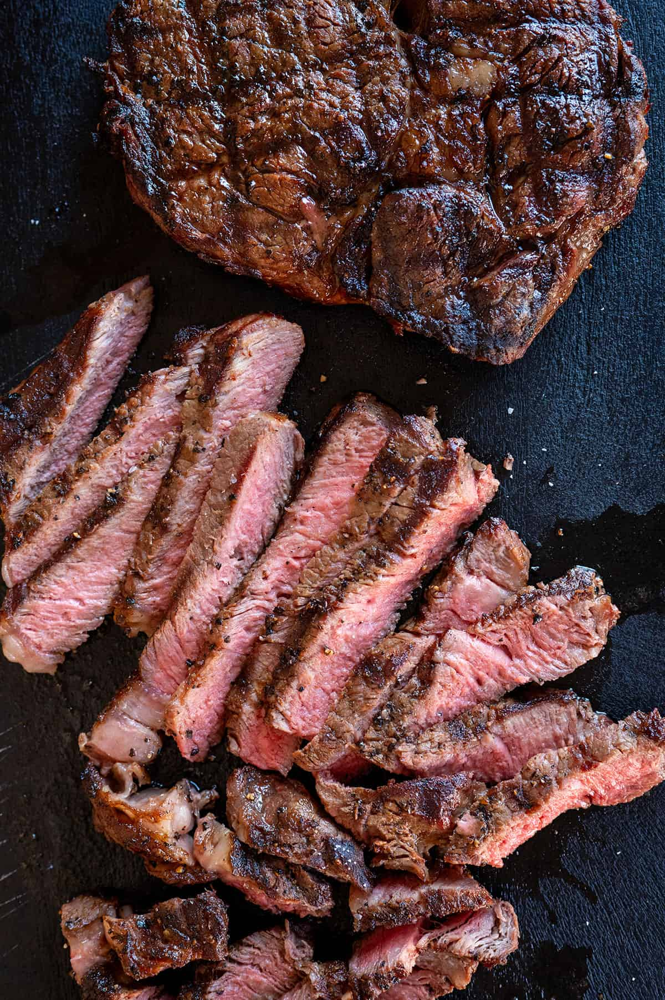

Ribeye steak recipe 01
Home

Description of the dish
One bite of a Pan-seared Ribeye Steak and you won't want to go back to your usual cooking methods.
This recipe requires minimal ingredients and gives you a juicy steak with a golden crust everytime.
Ingredients
- Ribeye, around 12 to 16 ounces
- Seasonings: salt and cracked black pepper
- Avocado, canola or vegetable oil
- Aromatics: shallot, garlic cloves and thyme to infuse the steak
Steps needed to complete the dish
- Season the steak.
- Heat the pan.
- Sear the steak and leave it alone for 1 full minute.
- Move and flip the steak.
- Add flavour using butter, shallot and garlic.
- Let the steak rest before slicing then serve.